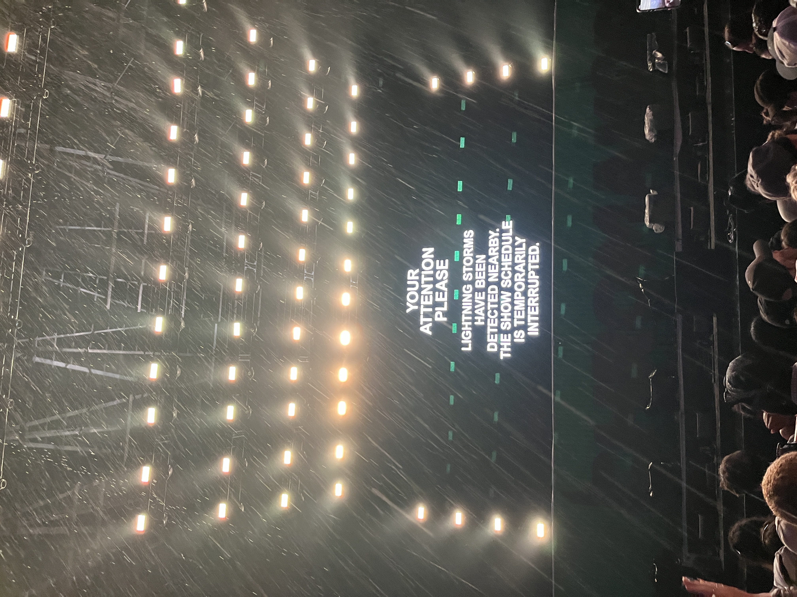

A five hour trip to Montreal and standing in the hot sun for almost ten hours is not something I would normally commit to for just one day of music. But when Tyler the Creator, the headliner of the Montreal based Osheaga music festival, dropped his new album Don't Tap The Glass, just a week prior, being among the first to hear those songs live became an opportunity I couldn't pass up.
I started my day with a DJ set at the SiriusXM stage before staking out a spot near the front for Tyler's performance at the Bell stage. The nine hour long wait for the headliner was made bearable by the variety of acts passing through the two main festival stages that I could see. I first caught Sophia Camara, an up-and-coming Canadian artist whose set showed promise. Then came Alex Warren, a Grammy-nominated Best New Artist who began his career as a TikToker but has evolved into something more. While I was not very familiar with his music, this performance gave me a newfound appreciation for his work. He was entertaining not just for his music but for his between-song banter, connecting with the audience, and carrying himself with a personable, humble energy that made him easy to root for.
Up next was Tommy Richman, who broke unspoken festival rules by jumping between both stages mid-performance, turning his set into an unpredictable spectacle. Unfortunately, his set seemed sullied by the antagonistic attitude he had toward the audience, leading to him being booed for getting upset with someone in the audience. Smino followed him with a stronger set, delivering a chill and fun performance. Then came one of my unexpected favorites of the day, Shaboozey. Coming off overnight success with a hit collaboration with Beyonce and the longest running #1 in Billboard history for "Bar Song (Tipsy)", he delivered an energetic and emotional set, opening up about his gratitude for his newfound audience. He came right to the edge of the stage, leaning into the crowd, and carried the same personable, humble presence that had made Alex Warren so enjoyable earlier.

Gracie Abrams took the stage next, but her set was cut short by a thunderstorm without much warning. For a moment, my heart sank. After waiting more than nine hours in the hot sun, the idea of Tyler's performance being cancelled felt like a cruel punchline to a very long day.

After about an hour of waiting in the rain, the storm subsided and Tyler finally walked onto the stage. The crowd had been brought together by the shared anxiety of almost losing the moment we had all been waiting for, and that tension only made the release more electric. Tyler delivered a performance that was everything I had hoped for, and the high energy songs from his latest album seemed like they were made to be performed live. I had gone to his concert in Toronto's Scotiabank Arena a few weeks earlier, where he was on tour for his previous album Chromakopia, and while that show was great, the Osheaga performance was on another level entirely.

My only complaint of the night came at the very end, as exiting Parc Jean-Drapeau proved to be a logistical nightmare. The only way off the island was a single small subway station, and my friends and I had to wait nearly an hour in the slow-moving line just to get out.
Despite this, my experience at Osheaga 2025 was unforgettable, and something I will definitely be telling stories about for years to come.